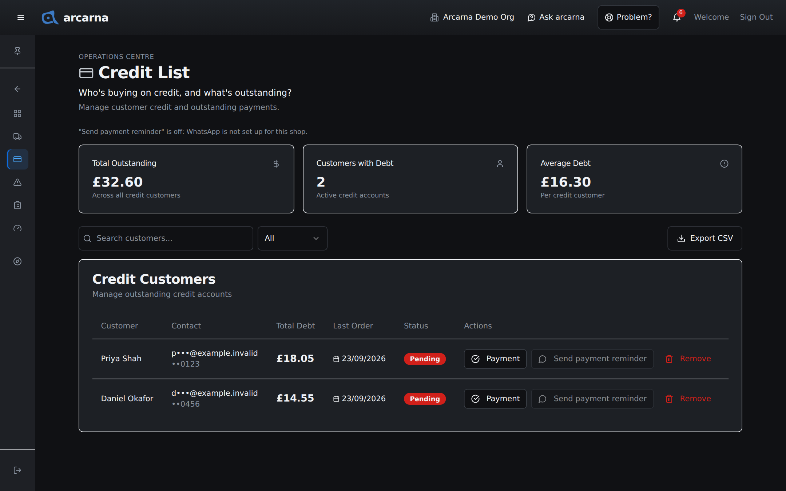
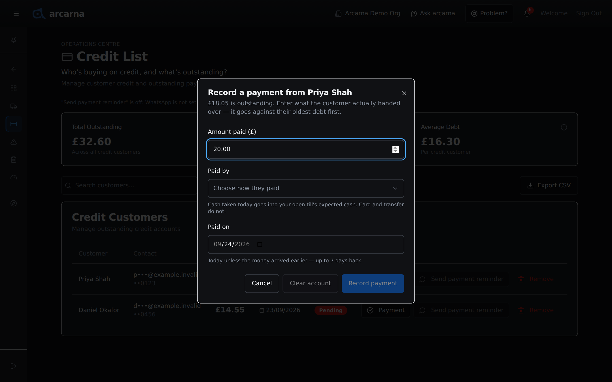
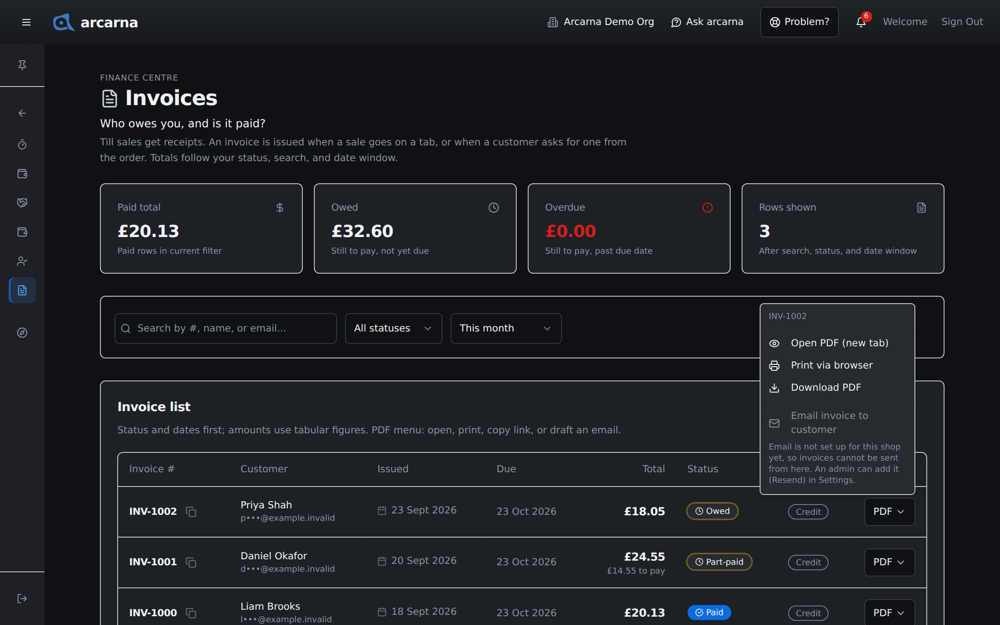
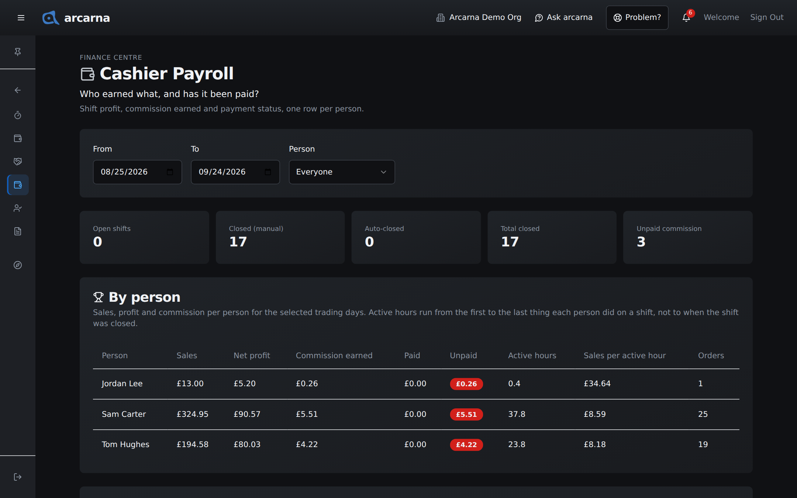

Staff training manual
Staff training manual
The money side of the back office: who owes the shop and how to take their repayments, invoices, the shop's running costs, and cashiers' commission. This section is for managers and above.
Finance · where things are
The money pages MANAGER
Most of the money pages sit in the Finance Centre. The Credit List sits in the Operations Centre, because repayments usually happen over the counter. Cashiers see only their own Shifts in the Finance Centre; everything below is for managers and above.
| Page | Where | What it answers |
|---|---|---|
| Credit List | Operations Centre | Who's buying on credit, and what's outstanding? |
| Invoices | Finance Centre | Who owes you, and is it paid? |
| Expenses | Finance Centre | Where is your money going? |
| Cashier Payroll | Finance Centre | Who earned what, and has it been paid? |
| Shifts | Finance Centre | Who was on, and did the till balance? Covered in Section 2. |
| Staff Performance | Finance Centre and Truths Centre | The same page in both places. Covered in Section 9. |
| Reseller Partners | Finance Centre | What has each partner been supplied, and what have they paid? |
Operations Centre · Credit List
The Credit List
When a cashier puts a sale On credit (tick), or a split payment has an On credit part, the amount is added to that customer's tab (Section 3). The Credit List gathers every customer with a tab, so you can see what is owed and take repayments.
- Open the menu, choose Operations Centre, then Credit List.
- The cards at the top show Total Outstanding, Customers with Debt and Average Debt for the customers listed.
- Search by name with Search customers..., or use the status box to show All, Pending, Partial or Paid.
- Select a customer's name to see what their balance is made up of: each order, what is still owed on it, and whether it is Pending or Partial. Select an order to see its lines.

Taking a repayment
Customers often pay a bit at a time. Record exactly what they hand over; arcarna puts it against their oldest debt first.
- Select Payment on the customer's row. The window shows what is outstanding.
- Enter the Amount paid (£).
- Choose Paid by: Cash, Card or Transfer. This is required, because only cash goes into a drawer.
- Paid on is today. If the money actually arrived earlier, pick that date, up to 7 days back.
- Select Record payment. The message says what was received and what is still outstanding, or that the account is clear.
If the customer is paying everything they owe, select Clear account instead. It clears the whole balance shown. If more has gone on the tab since you opened the window, arcarna refuses rather than clear an amount you have not seen, so close the window and look again.

| How it was paid | What happens to the till |
|---|---|
| Cash, today, with your shift open | Added to your till's expected cash, and shown on its own line on your Z-report, so the drawer still balances. |
| Cash, with no shift open for you | Recorded against the tab, but not in any drawer's expected cash. The message says so. |
| Cash, backdated | Recorded on the day you chose. It is not in today's till. |
| Card or transfer | Recorded against the tab. It never touches the drawer. |
Reminding a customer
Send payment reminder sends the customer an approved WhatsApp message saying what they owe, to the number on file. Nobody sees the number, and the send is logged. If reminders are not available (for example WhatsApp is not set up), the line under the page title says why and the button is greyed out. Each message costs about £0.016 from 1 October 2026.
Removing a customer and exporting
Remove takes a customer off the Credit List after you confirm with Remove from credit list. Their running balance and its history are cleared and anything they owe stops being tracked here. It cannot be undone, so use it only when you are sure the debt is settled or will not be collected.
Export CSV downloads the list as it is filtered: customer, total debt, last order and status. It has no phone numbers or emails.
Finance Centre · Invoices
Invoices
Till sales get receipts. An invoice is issued when a sale goes on a tab, or when a customer asks for one from the order. The Invoices page lists them all and shows which are still to be paid.
| Card | What it adds up |
|---|---|
| Paid total | Invoices fully paid. |
| Owed | Still to pay, not yet due. |
| Overdue | Still to pay, past the due date. |
| Rows shown | How many invoices match your search, status and date window. |
The totals follow the filters. Search by invoice number, name or email with Search by #, name, or email..., pick a status, and choose a date window: All dates, Today, This week or This month.
What the status means
| Status | What it means |
|---|---|
| Paid | Nothing left to pay. |
| Part-paid | Some has been paid against the tab; the rest is not yet due. |
| Owed | Nothing paid yet, not yet due. |
| Overdue | Money still owed after the due date, even if part has been paid. |
| Void | The order was cancelled, or the debt was written off. It will not be chased. |
An invoice's status follows the customer's tab. Record repayments on the Credit List and the invoice updates itself; there is nothing to mark paid here.
Sending or printing an invoice
- Select PDF on the invoice's row.
- Choose Open PDF (new tab), Print via browser or Download PDF.
- Or choose Email invoice to customer. arcarna sends it to the email on file, and the send is logged. Until the shop's email is set up this is greyed out, with the reason beneath it.
The copy button beside an invoice number copies it, for quoting on the phone or in a bank reference.

Finance Centre · Expenses
Expenses
The Expenses page is where the shop's running costs are kept: rent, utilities, insurance and the like. arcarna uses them to work out what the business really made, so an expense left off makes the shop look more profitable than it is.
- Select Add expense.
- Give it a Name, such as "Shop rent".
- Choose a Category: Rent, Utilities, Salaries, Insurance, Marketing, Maintenance, Supplies, Taxes or Other.
- Enter the Amount and how often it is paid under Frequency: Daily, Weekly, Monthly or Yearly.
- Set the Start Date, and an End Date (Optional) if it stops, such as a fixed-term contract.
- Add any notes under Description (Optional), then select Create.
The Overhead Expenses list shows each one with its category, amount, frequency, dates and whether it is Active or Inactive. Use the edit button on its row when an expense's amount changes (the window saves with Update), rather than adding a second one. If you are offline, a new expense is saved on the device and sent when the connection returns.
Totals and Profit Truths (admins)
Admins also see four cards above the list for the current month: Daily Overhead, Monthly Overhead, Order Expenses and Total Expenses. View reports opens Profit Truths in the Truths Centre. These are whole-business money, so managers keep the list and the form but not the totals.
Finance Centre · Cashier Payroll
Cashier Payroll and commission
When the shop pays cashiers commission, each closed shift earns it on that shift's profit. Cashier Payroll shows what each person earned, what has been paid, and what is still owed to them.
- Set From and To. The page starts on the last 30 days.
- Leave Person on Everyone, or pick one person.
- Read the cards: Open shifts, Closed (manual), Auto-closed (closed by the 6am daily close), Total closed and Unpaid commission (how many shifts still have commission to pay).
By person
| Column | What it means |
|---|---|
| Sales and Orders | What they sold, and how many orders, over the dates chosen. |
| Net profit | The profit on their shifts' sales, which commission is worked out from. |
| Commission earned, Paid and Unpaid | What they have earned, what has been confirmed as paid, and what is still owed. Anything owed shows in red. |
| Active hours | From the first to the last thing they did on each shift, not until the shift was closed. A shift left open overnight does not count as a long day. |
| Sales per active hour | Sales divided by active hours. |
Confirming a commission payment
The Commission payment log lists each closed shift with its Net profit, Commission and status (paid, partial or unpaid). Once you have actually paid a cashier:
- Find the shift in the log.
- Select Confirm paid — £…. The button shows the amount still owed on that shift.
- You see Commission payment confirmed, and the person's Unpaid figure drops.
Nobody can confirm their own commission. The button does not appear on your own shifts.

| Who | Whose pay they see |
|---|---|
| MANAGER | Cashiers' rows, and their own. |
| ADMIN | Also cashiers' rows and their own. Managers' pay is the owner's alone. |
| OWNER | Everyone. |
Finance Centre · the rest
Shifts, Staff Performance and Reseller Partners
Shifts
The Shifts page lists who is on now and how each recent till counted, with the Z-report for any shift. Managers see their cashiers' shifts and their own, and can close or reopen a shift on someone's behalf. Section 2 covers it in full.
Staff Performance
Listed in the Finance Centre as well as the Truths Centre, because pay conversations often start there. It is the same page either way. Section 9 explains it. Its figures are a guide: no pay decision is made from them alone.
Reseller Partners
If the shop supplies stock to other businesses on account, record it here.
- Under Add a partner, enter their Trading name and Partner code (codes follow the pattern PPP-01, PPP-02 and so on).
- Under Record supply or payment, pick the Partner and the Entry type: Stock supplied (they owe us) or Payment received.
- Enter the Amount (£), add Notes (optional), and save. A payment clears the oldest unpaid supplies first.
View report opens the Reseller Credit & Payment Evidence: each partner's balance, how old it is, and any supply holds.